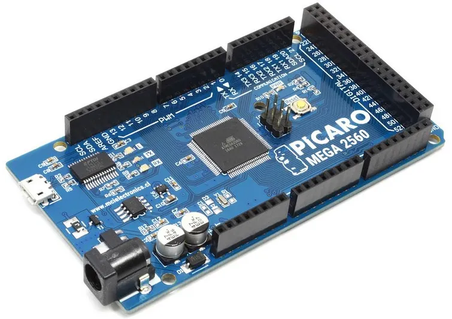
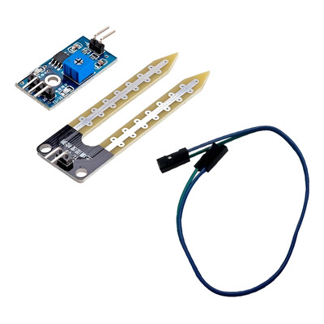
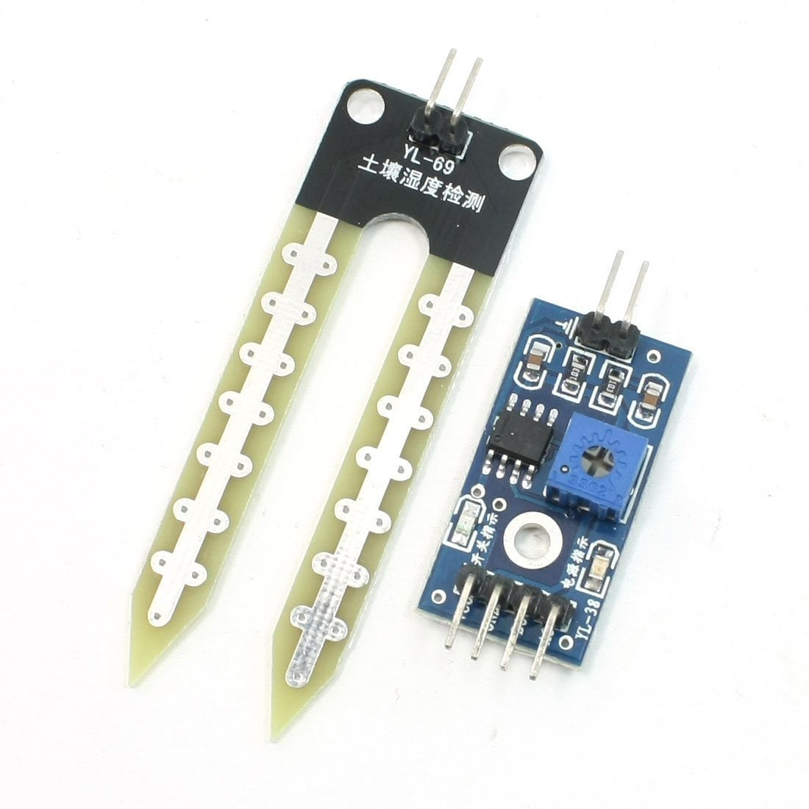

¿Qué ofrece AquaGuard?

Alertas Instantáneas
Notificaciones automáticas ante cualquier anomalía o riesgo sanitario.

Enfoque Comunitario
Solución pensada para hogares, instituciones y comunidades.
Componentes del sistema
Principales dispositivos utilizados en AquaGuard.

Arduino
Microcontrolador para integrar sensores y comunicaciones.

Sensor de pH
Mide la acidez del agua para asegurar niveles seguros.

Sensor de temperatura
Controla variaciones térmicas que afectan la calidad.

Sensor de cloro
Verifica niveles de desinfección para consumo seguro.

Sensor de humedad
Monitorea condiciones ambientales del entorno.